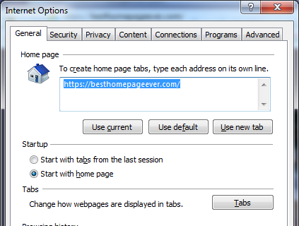

All the Best Websites in a Single Click!
Quickly and easily add BestHomepageEver to your new tab button.
Choose your browser
Follow instructions under 'Set as my New Tab page' option.


Internet Explorer
Set your Homepage
Step 1.
Click the Tools tab (or, ALT+T). Select Internet Options, at or near the bottom of the list.
Step 2.
Enter or copy/paste https://besthomepageever.com into homepage box. Be sure Start with home page is selected under 'Startup'.

Set your New Tab page
Step 1.
Select Internet Options under the Tools tab. You can also enter Tools by hitting (ALT+T).
Step 2.
Select the Tabs button under the Tabs category, then simply match the following settings.
Google Chrome
Set your Homepage
Step 1.
First, click the settings iconStep 2.
Next, click to match the below settings (appearances may be slightly different).Set your New Tab page
Step 1.
Click here to visit New Tab Redirect extension.
Note: This will open a new page so that you can still view this page.
Step 2.
Click Add to Chrome button, then Add Extension when prompted.
Step 3.
Lastly, you should see a screen to set your Options. Simply click that and enter https://besthomepageever.com in the URL box. That's it!
Safari
Set your Homepage
Homepage Settings
Choose Safari > Preferences, then click General.Set homepage
Enter https://besthomepageever.com in the Homepage field, or click Set to Current Page if you are currently viewing BestHomepageEver.Convenience tip: Add home button
Click on the View Menu > Customize Toolbar

In the dialog thats open drag and drop the Home button over the Toolbar.

Set your New Tab page
Homepage Settings
Choose Safari > Preferences, then click General.Open new tabs with homepage:
Click the New tabs open with pop-up menu, then choose Homepage.Open new windows with homepage:
Click the New windows open with pop-up menu, then choose Homepage.
Mozilla Firefox
Set your Homepage
Click settings menu in far upper-right.  Choose options. Then, copy/paste https://besthomepageever.com/ into Home Page box.
Choose options. Then, copy/paste https://besthomepageever.com/ into Home Page box.
Above that bar, choose Show my home page in drop down menu.
Set your New Tab page
- Please note: This only works if Besthomepageever is your current homepage.
Click here to add New Tab Homepage extension.
This will open a new page so you can still see this page. - Click the Install (XPI) button (or similar), then allow install.
(trust me, this is not a virus. I've been using it for a long time).
Microsoft Edge
Step 1.
Click the ellipsis (...) menu in the upper right. Scroll down to the Settings button.
Step 2.
Under the heading "Open with", choose the radio button for "A specific page or pages", then from the pull down menu, choose "Custom".
Step 3.
Directly under the Custom pull down menu option, type in https://besthomepageever.com, then hit ENTER, +, or the save sign to submit.
Important:
You may need to remove any other pages listed by clicking the "X" to the right (i.e. MSN, about:start, etc.).
Create Windows quick shortcut in your Start menu
Step 1.
Click the ellipsis (...) menu in the upper right. Then select pin to Start. The link will appear in the Live Tile area of the Start Menu
If you aren't a huge fan of Microsoft Edge, switch to Internet Explorer!
Step 1.
Type "Internet Explorer" in the Cortana/Search box.
Step 2.
Right click on "Internet Explorer" in the Cortana/Search window.
Step 3a.
To add as a tile on your Start Menu click Pin to Start.
Step 3b.
To keep it on your taskbar simply click Pin to taskbar.